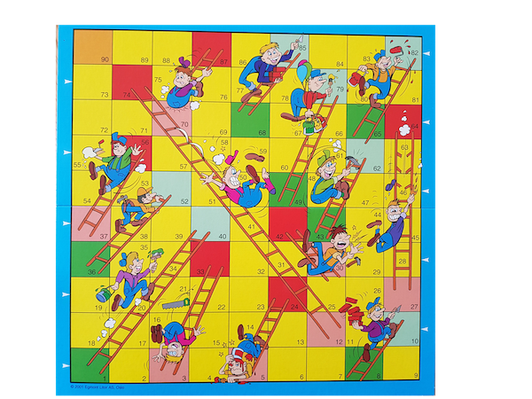
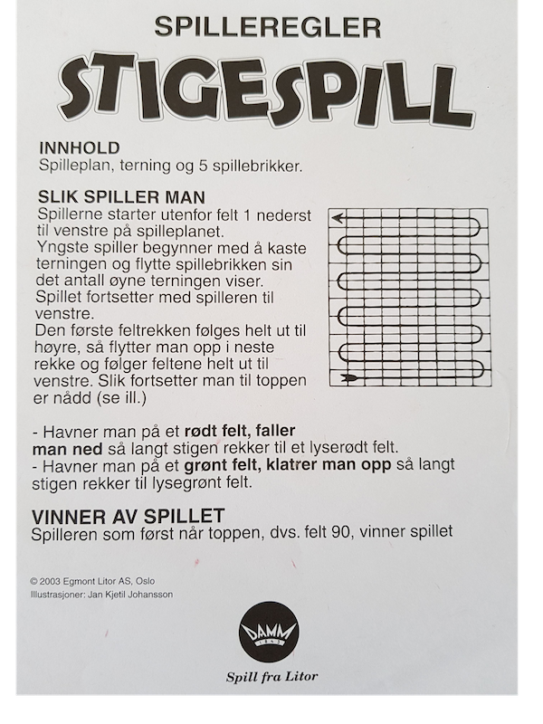

Stigespillet¶
Stigespill er et brettspill hvor målet er å komme seg fra starten til slutten av brettet med færrest mulig terningkast. Rundt på brettet er det en rekke «stiger» som fungerer som snarveier for spillbrikkene, eller en tilbakeføringsvei så man må gå et visst antall felter om igjen.
Spillebrett og regler¶
 
Oppgave¶
Hvor mange kast kan man forvente å bruke for å komme i mål på stigespillet?
Forslag til aktiviteter og utforsking¶
Lag en simulator av stigespillet som er vist i bildet ovenfor, og kjør simuleringer for å finne ut hvor mange terningkast vi i gjennomsnitt må bruke for å komme i mål i dette spillet.
Vis fordelingen av terningkastene grafisk.
Kan du visualisere resultatene på flere måter?
Vurder hvor mange simuleringer som er nødvendig å kjøre for å gi sikre estimater for gjennomsnittlig antall kast for å komme i mål.
Annet¶
Hvis du syntes denne oppgavene var spennende, og vil lese mer om matematikken bak dette spillet kan du lese på bloggen og nettstedet Datagenetics.
Denne oppgaven er laget av fuzzbin og bitjungle etter en idé fra Henrik Kjønnerud (henrikk@vfk.no) på Greveskogen VGS som laget den opprinnelige oppgaven. Oppgaven er lisensiert under en Creative Commons Navngivelse-DelPåSammeVilkår 4.0 Internasjonal lisens.